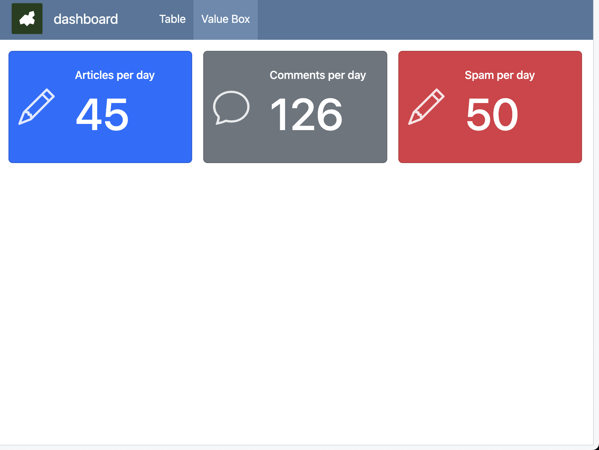

# {.sidebar}
Sidebar content 개요
Quarto는 R Markdown을 기반으로 하는 문서 작성 도구입니다.
R Markdown은 RStudio에서 제공하는 문서 작성 도구로, R 코드와 문서를 한 번에 작성할 수 있습니다.
Quarto는 R Markdown의 flexdashboard의 역할을 이어가는 기능으로써, R Markdown의 장점을 그대로 가져오면서, R 뿐만 아니라 Python, Julia 등 다양한 언어를 지원합니다.
본 게시글은 Quarto 공식 문서를 참고해 작성되었습니다.
Quarto Dashboard 소개
Quarto Versione
Quarto Dashboard는 현재 개발 중인 기능으로, 1.4 버전 이상의 Quarto를 사용해야 합니다.
이번 글에서는 Quarto를 사용하여 Markdown과 R, Python, Julia등을 활용해 아래 이미지 같은 인터랙티브한 대시보드를 만드는 방법을 소개합니다.

더 많은 예시는 링크에서 확인 할 수 있습니다.
Quarto dashboard는 다양한 언어를 활용할 수 있기 때문에 이들로 부터 파생되는 Plotly, Leaflet, Jupyter Widgets, Htmlwidgets를 포함한 다양한 커스텀 위젯을 사용할 수 있습니다.
대시보드의 구성
보통 대시보드의 구성은 아래 그림과 같이 5개의 영역으로 구분합니다.

- Main: 대시보드에서 주요 지표를 포함한 내용을 표현하는 공간입니다.
- Header / Footer : 대시보드에 대한 일반적인 메타 정보를 소개합니다.
- Navigator: 대시보드가 여러 개의 내용을 담고 있어 main을 구분해야하는 경우 각 페이지를 구분짓는 역할을 합니다.
- Side: 대시보드의 내용을 조절하는 역할을 합니다.
즉, 위의 예시에서 보여진 Labor and Delivery Dashboard는 아래와 같이 영역을 구분해볼 수 있습니다.

대시보드 만들기
qmd 파일에서 (이후 배포를 고려하면 파일명은 index.qmd를 권장합니다.)
---
format: dashboard
---를 추가하여 quarto dashboard를 만들 수 있습니다.
Quarto dashboard에서 반드시 알아야 하는 컨셉은 3가지이며 하나씩 소개하면더 대시보드를 만들어가겠습니다.
- 카드
- 대시보드 내부 요소 배치 (레이아웃)
- 대시보드 구성 (페이지)
카드
카드는 대시보드의 Main을 구성하는 그래프나 테이블, 값등을 포함하는 하나의 단위입니다.
quarto에서는 다음과 같이 사용합니다.
::: {.card}
This text will be displayed within a card
:::추가로
```{r}
...
```를 사용하는 기본 코드 블록은 Dashboard format에서 자동으로 카드로 변경됩니다.
이때 카드에 사용할 수 있는 주요 옵션은 아래와 같습니다.
-
title: 카드의 제목 -
expandable: 카드를 접을 수 있을지의 여부 -
output: 결과를 출력할지 여부 -
layout-ncol: 카드 내용을 구분할 column의 개수 (layout-nrow)
이 외에 기본 코드블록을 사용하기 때문에 코드 블록의 옵션들을 사용 가능합니다.
이제 카드를 qmd에 2개 추가해보겠습니다.
```{r}
#| echo: false
library(ggplot2)
```
```{r}
#| title: "Card 1"
#| layout-ncol: 2
mtcars |>
ggplot(aes(x = mpg, y = wt)) +
geom_point()
mtcars |>
ggplot(aes(x = mpg, y = qsec)) +
geom_point()
```
```{r}
#| title: "Card 2"
#| output: false
mtcars |>
ggplot(aes(x = mpg, y = vs)) +
geom_point()
```
```{r}
#| title: "Card 3"
#| expandable: false
mtcars |>
ggplot(aes(x = mpg, y = vs)) +
geom_point()
```위 코드의 실행결과는 아래 그림처럼 2개의 카드를 만들어냅니다. (2번째는 output:false)

레이아웃
대시보드의 레이아웃은 특별한 설정을 하지 않으면 (위 예시처럼) 1개의 카드가 1개의 행으로 배치됩니다.
그런데 ## Row 태그를 사용하면 ## Row 태그 아래에 있는 카드들을 1개의 행에 배치할 수 있습니다.
(마찬가지로 별도의 설정을 하지 않으면 Column에 같은 크기로 배치됩니다)
## Row {height=70%}
:::{.card}
Card 1
:::
## Row {height=30%}
:::{.card}
Card 2-1
:::
:::{.card}
Card 2-2
:::

추가로, Row로 먼저 행을 구분 한뒤, Column을 사용해 디테일한 배치도 가능합니다.
이때 Column은 ### Column으로 ## Row안에만 사용할 수 있습니다.
## Row {height=70%}
:::{.card}
Card 1
:::
## Row {height=30%}
### Column {width=40%}
:::{.card}
Card 2-1
:::
### Column {width=60%}
:::{.card}
Card 2-2
:::

Scroll
별 다른 설정을 하지 않으면 각 Row에 배치된 요소의 높이들의 합이 100%에 맞추어 크기가 일괄적으로 조절되지만, Scrolling 옵션을 사용하여 요소의 원래 크기를 유지하며 화면이 스크롤 되게 변경할 수 있습니다.
format:
dashboard:
scrolling: true Tabset
카드를 행과 열로 배치하는 것 외에도, Tabset을 사용하여 카드를 탭으로 구분할 수 있습니다.
## Row {.tabset}


페이지
대시보드에 여러 요소들을 담아야 한다면 별도의 페이지로 구분하여 만들 수 있습니다.
이때 페이지는 # 태그를 사용하고, yaml에 “title”을 설정해야합니다.
---
title: "dashboard"
format: dashboard
---# Page A
## Row {height=70%}
:::{.card}
Card 1
:::
## Row {height=30%}
### Column {width=40%}
:::{.card}
Card 2-1
:::
### Column {width=60%}
:::{.card}
Card 2-2
:::
# Page B
:::{.card}
Card 3
:::


이처럼 title을 설정하면 Header가 생성되며 Page 가 존재한다면 Navigation 역할도 같이 수행합니다.
Header
Header에서는 title 외에 author를 사용해 일종의 “subtitle” 역할을 할 수 있습니다. 추가로 logo를 사용하여 대시보드의 로고를 설정하거나, 외부 링크나 자료로 연동할 수 있는 nav-buttons도 사용가능합니다.
네비게이션 버튼을 커스텀으로 제작하는 것에 대해서는 설명하지 않고 공식문서의 링크로 대체합니다.
Quarto Versione
Quarto 1.4.455 버전을 기준으로, 네비게이션 버튼은 버그로 아직 작동하지 않습니다.
Sidebar
Sidebar는 sidebar 태그를 사용하여 만들 수 있으며 특정 페이지에 종속되지 않습니다.
로고와 sidebar를 설정하고 난 대시보드의 결과는 다음과 같습니다.

대시보드 채우기
대시보드에 들어갈 수 있는 내용은 주로 r로 만든 결과물이지만, 다른 형태의 요소들도 활용할 수 있습니다.
테이블
여러 옵션이 있으며, kable, DT, reactable 정도가 사용됩니다.

Value Box
Quarto 대시보드에서만 사용할 수 있는 “지표를 표현하기 위한” 특별한 방법입니다.
아래 예시처럼 {.valuebox} 코드로 사용할 수 있습니다.
옵션으로 색상은 primary, secondary, success, danger, warning, info, light, dark를 사용할 수 있으며, 사용 가능한 (bootstrap) 아이콘의 종류는 링크에서 확인 가능합니다.
::: {.valuebox icon="pencil" color=primary}
Articles per day
`r articles`
:::
Theme
다른 Quarto 기능들과 마찬가지로 Quarto Dashboard도 yaml에서 사용되어 색상과 스타일을 꾸밀 수 있는 Theme 기능을 제공합니다.
기본 값은 cosmo이고, 가능한 값의 목록은 링크에서 확인 가능합니다.
---
format:
dashboard:
logo: Zarathu.png
theme: sandstone
---

대시보드 게시하기
Quarto로 만든 Dashboard는 Quarto pub, Github page, Posit connect, Netlify 등의 서비스를 활용하여 공유할 수 있습니다.
이 글에서는 다루지 않으며, 차라투의 Quarto 교육자료 17페이지를 참고하시길 바랍니다.
다른 대시보드 툴과 Quarto Dashboard의 차이

Quarto Dashboard는 Tableau, Power BI, Shiny나 Streamlit과 같은 대시보드를 만들 수 있는 도구와 비교될 수 있습니다.
제일 먼저 대시보드 사용에 필요한 비용입니다. 즉 Tableau, Power BI등 상용 서비스는 클릭으로 쉽게 만들 수 있지만 사용하기 위해 비용이 발생합니다.
한편 Quarto Dashboard는 별도의 비용은 없지만, 개발을 통해 대시보드를 만들어야 합니다.
두번째로는 대시보드의 내용이 변하는 가의 여부입니다.
즉 사용자의 선택 값에 따라 값이 동적으로 바뀌어야 한다면 Shiny나 Streamlit을 사용하는 것이 좋습니다.
반면 사용자의 선택은 없고 값이 정적으로 고정되어 있다면 Quarto Dashboard를 사용하는 것이 좋습니다.
이 둘의 차이는 동적 대시보드는 사용자의 입력을 처리하고 결과를 호스팅할 서버가 필요하고 이를 한 비용이 필요합니다. (정적은 비용이 들지 않습니다)
정적/동적
예를 들어, 어제의 매출 데이터를 계산하여 보여주는 대시보드는 날마다 값이 변하긴 하지만, 사용자의 입력이 없기 때문에 정적으로 이루어져 Quarto Dashboard로도 충분합니다.
그런데 동일한 매출 데이터이지만, 사용자로부터 날짜를 입력 받고, 그에 따라 매출 데이터를 계산하여 보여주는 대시보드는 데이터가 변해야하기 때문에 Shiny나 Streamlit 과 같은 동적 대시보드가 필요합니다.
(Quarto Dashboard에서의 페이지나 탭셋은 모든 결과를 만들어두고 필요에 따라 보여주는 내용을 다르게 한다의 관점으로 데이터가 변하지 않는 정적 기능입니다.)
마치며
이번 아티클에서는 새롭게 공개된 Quarto Dashboard를 통해 대시보드를 구성하는 방법에 대해 알아보았습니다.
꼭 헬스케어, 메디컬 IT 업계에서뿐 아니라 다양한 산업과 역할에서 데이터를 활용하기 위해 대시보드를 활용하고 있습니다.
Quarto와 사용 가능한 R이나 Python을 활용할 수 있다면 Quarto Dashboard를 사용해 정적 대시보드 구성과 공유가 더욱 편리하게 이루어지기를 기대하며 글을 마칩니다.
Reuse
Citation
BibTeX citation:
@online{kim2023,
author = {Kim, Jinhwan},
title = {Quarto {Dashboard를} {이용해} {대시보드} {개발하기}},
date = {2023-12-11},
url = {https://blog.zarathu.com/posts/2023-12-11-quarto-dashboard},
langid = {en}
}
For attribution, please cite this work as:
Kim, Jinhwan. 2023. “Quarto Dashboard를 이용해 대시보드
개발하기.” December 11, 2023. https://blog.zarathu.com/posts/2023-12-11-quarto-dashboard.